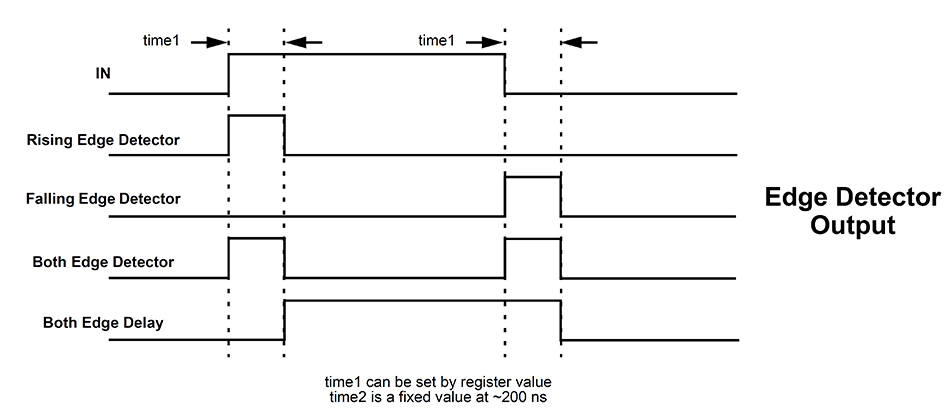
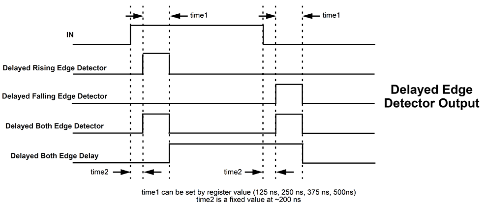
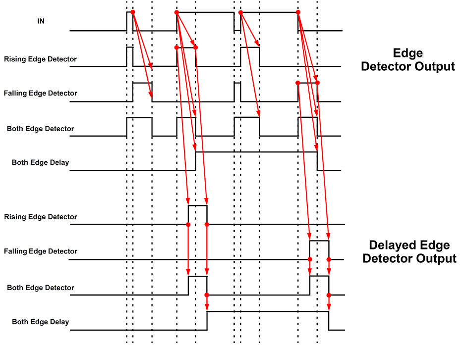

The Programmable Time Delay (PDLY) logic cells can generate a delay that is selectable from one of four timings (time1 in figure below) configured in the GreenPAK Designer. The programmable time delay cells can generate one of four different delay patterns, rising edge detection, falling edge detection, both edge detection and both edge delay. These four patterns can be further modified with the addition of delayed edge detection, which adds an extra unit of delay as well as glitch rejection during the delay period. See the timing diagrams below for further information.

Figure 1.

Figure 2.

Figure 3.
Chose how the programmable delay should behave.
If ‘Both edge delay’ Mode was chosen or Output mode ‘Delayed’ was selected, use this parameter to pick the length of the delay.
For Rising edge detector, Falling edge detector or Both edge detector, chose to delay the output by selecting ‘Delayed’ and then choosing the delay time with the Delay parameter.
• Non-delayed: for edge detection mode does not create a delay;
• Delayed: is available for edge detector modes only and allows the output to be delayed;